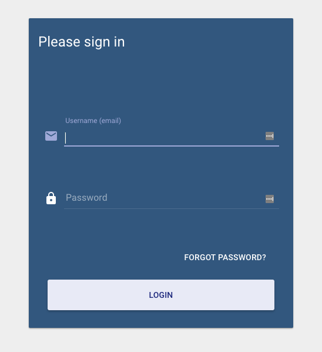
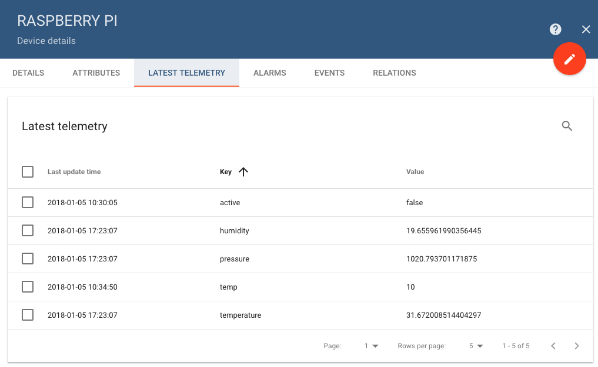
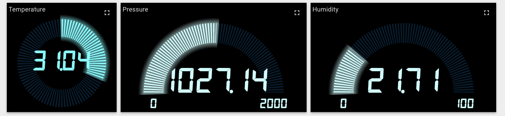

View IoT Data with ThingsBoard
Updated by Linode Written by Jared Kobos
What is ThingsBoard?
ThingsBoard is an open source platform for collecting and visualizing data from Internet of Things devices. Data from any number of devices can be sent to a cloud server where it can be viewed or shared through a customizable dashboard.
This guide will show how to install ThingsBoard on a Linode and use a Raspberry Pi to send simple telemetry data to a cloud dashboard.
NoteThis guide will use a Raspberry Pi 3 with a Sense HAT. You can substitute any device capable of sending telemetry data, or usecurlto experiment with ThingsBoard without using any external devices.
Install ThingsBoard
ThingsBoard runs on Java 8, and the Oracle JDK is recommended.
Install
software-properties-common:sudo apt install software-properties-commonAdd the Oracle PPA repository:
sudo apt-add-repository ppa:webupd8team/javaUpdate your system:
sudo apt updateInstall the Oracle JDK. To install the Java 9 JDK, change
java8tojava9in the command:sudo apt install oracle-java8-installerCheck your Java version:
java -version
Set Up PostgreSQL
Install PostgreSQL:
sudo apt install postgresql postgresql-contribCreate a database and database user for ThingsBoard:
sudo -u postgres createdb thingsboard sudo -u postgres createuser thingsboardSet a password for the
thingsboarduser and grant access to the database:sudo -u postgres psql thingsboard ALTER USER thingsboard WITH PASSWORD 'thingsboard'; GRANT ALL PRIVILEGES ON DATABASE thingsboard TO thingsboard; \q
Install ThingsBoard
Download the installation package. Check the releases page and replace the version numbers in the following command with the version tagged Latest release:
wget https://github.com/thingsboard/thingsboard/releases/download/v1.3.1/thingsboard-1.3.1.debInstall ThingsBoard:
sudo dpkg -i thingsboard-1.3.1.debOpen
/etc/thingsboard/conf/thingsboard.ymlin a text editor and comment out theHSQLDB DAO Configurationsection:- /etc/thingsboard/conf/thingsboard.yml
-
1 2 3 4 5 6 7 8 9 10 11 12 13 14 15# HSQLDB DAO Configuration #spring: # data: # jpa: # repositories: # enabled: "true" # jpa: # hibernate: # ddl-auto: "validate" # database-platform: "org.hibernate.dialect.HSQLDialect" # datasource: # driverClassName: "${SPRING_DRIVER_CLASS_NAME:org.hsqldb.jdbc.JDBCDriver}" # url: "${SPRING_DATASOURCE_URL:jdbc:hsqldb:file:${SQL_DATA_FOLDER:/tmp}/thingsboardDb;sql.enforce_size=false}" # username: "${SPRING_DATASOURCE_USERNAME:sa}" # password: "${SPRING_DATASOURCE_PASSWORD:}"
In the same section, uncomment the PostgreSQL configuration block. Replace
thingsboardin the username and password fields with the username and password of yourthingsboarduser:- /etc/thingsboard/conf/thingsboard.yml
-
1 2 3 4 5 6 7 8 9 10 11 12 13 14 15# PostgreSQL DAO Configuration spring: data: jpa: repositories: enabled: "true" jpa: hibernate: ddl-auto: "validate" database-platform: "org.hibernate.dialect.PostgreSQLDialect" datasource: driverClassName: "${SPRING_DRIVER_CLASS_NAME:org.postgresql.Driver}" url: "${SPRING_DATASOURCE_URL:jdbc:postgresql://localhost:5432/thingsboard}" username: "${SPRING_DATASOURCE_USERNAME:thingsboard}" password: "${SPRING_DATASOURCE_PASSWORD:thingsboard}"
Run this installation script:
sudo /usr/share/thingsboard/bin/install/install.sh --loadDemoStart the ThingsBoard service:
sudo systemctl enable thingsboard sudo systemctl start thingsboard
NGINX Reverse Proxy
ThingsBoard listens on localhost:8080, by default. For security purposes, it’s better to serve the dashboard through a reverse proxy. This guide will use NGINX, but any webserver can be used.
Install NGINX:
sudo apt install nginxCreate
/etc/nginx/conf.d/thingsboard.confwith a text editor and edit it to match the example below. Replaceexample.comwith the public IP address or FQDN of your Linode.- /etc/nginx/conf.d/thingsboard.conf
-
1 2 3 4 5 6 7 8 9 10 11 12 13 14 15server { listen 80; listen [::]:80; server_name example.com; location / { # try_files $uri $uri/ =404; proxy_pass http://localhost:8080/; proxy_http_version 1.1; proxy_set_header Upgrade $http_upgrade; proxy_set_header Connection "upgrade"; proxy_set_header Host $host; } }
Restart NGINX:
sudo systemctl restart nginx
Set Up ThingsBoard Device
Navigate to your Linode’s IP address with a web browser. You should see the ThingsBoard login page:

The demo account login
tenant@thingsboard.organd the password istenant. You should change this to a more secure password after you have signed in.From the main menu, click on the Devices icon, then click the + icon in the lower right to add a new device.
Choose a name for your device. Set the Device type to PI.
After the device is added, click on its icon in the Devices menu. Click on COPY ACCESS TOKEN to copy the API key for this device (used below).
Configure Raspberry Pi
NoteThe following steps assume that you have terminal access to a Raspberry Pi, and that Sense HAT and its libraries are already configured. For more information on getting started with Sense HAT, see the Raspberry Pi official documentation. If you would prefer to usecurlto send mock data to ThingsBoard, you can skip this section.
Basic Python Script
Using a text editor, create
thingsboard.pyin a directory of your choice. Add the following content, using the API key copied to your clipboard in the previous section:- thingsboard.py
-
1 2 3 4 5 6 7 8 9 10 11 12 13 14 15 16 17 18 19 20 21 22 23 24 25 26 27#!/usr/bin/env python import json import requests from sense_hat import SenseHat from time import sleep # Constants API_KEY = "<ThingsBoard API Key>" THINGSBOARD_HOST = "<Linode Public IP Address>" thingsboard_url = "http://{0}/api/v1/{1}/telemetry".format(THINGSBOARD_HOST, API_KEY) sense = SenseHat() data = {} while True: data['temperature'] = sense.get_temperature() data['pressure'] = sense.get_pressure() data['humidity'] = sense.get_humidity() #r = requests.post(thingsboard_url, data=json.dumps(data)) print(str(data)) sleep(5)
Test the script by running it from the command line:
python thingsboard.pyBasic telemetry should be printed to the console every five seconds:
{'pressure': 1020.10400390625, 'temperature': 31.81730842590332, 'humidity': 19.72637939453125} {'pressure': 1020.166259765625, 'temperature': 31.871795654296875, 'humidity': 20.247455596923828} {'pressure': 1020.119140625, 'temperature': 31.908119201660156, 'humidity': 19.18065643310547} {'pressure': 1020.11669921875, 'temperature': 31.908119201660156, 'humidity': 20.279142379760742} {'pressure': 1020.045166015625, 'temperature': 31.92628288269043, 'humidity': 20.177040100097656}If the script is working correctly, remove the
printstatement and uncomment ther = requests.post()line. Also increase thesleep()time interval:- thingsboard.py
-
1 2 3 4 5 6 7while True: data['temperature'] = sense.get_temperature() data['pressure'] = sense.get_pressure() data['humidity'] = sense.get_humidity() r = requests.post(thingsboard_url, data=json.dumps(data)) sleep(60)
Create a Systemd Service
You should now be able to run the script from the command line to transmit temperature, pressure, and humidity data once per minute. However, to make sure that data is sent continually, it’s a good idea to enable a new service that will run the script automatically whenever the server is restarted.
Copy the script to
/usr/bin/and make it executable:sudo cp thingsboard.py /usr/bin/thingsboard.py sudo chmod +x /usr/bin/thingsboard.pyCreate a service file to run the Python script as a service:
- /lib/systemd/system/thingsdata.service
-
1 2 3 4 5 6 7 8 9[Unit] Description=Push telemetry data from Sense HAT to ThingsBoard. [Service] Type=simple ExecStart=/usr/bin/thingsboard.py [Install] WantedBy=multi-user.target
Enable and start the service:
sudo systemctl enable thingsdata.service sudo systemctl start thingsdata.serviceCheck the status of the new service:
sudo systemctl status thingsdata.service
Send Data with cURL
NoteSkip this section if you are using a Raspberry Pi.
Create a sample JSON file with dummy data:
- dummy_data.json
-
1 2 3 4 5{ "temperature": 38, "humidity": 50, "pressure": 1100 }
Use
curlto send a POST request to the ThingsBoard server:curl -v -X POST -d @dummy_data.json http://$THINGSBOARD_HOST:$THINGSBOARD_PORT/api/v1/$ACCESS_TOKEN/telemetry --header "Content-Type:application/json"
View Data in ThingsBoard
If the service is running successfully, data should be transmitted to your ThingsBoard server every 60 seconds.
Log back into the ThingsBoard dashboard in your browser and click on your device’s card in the Devices menu. Choose the Latest Telemetry tab from the resulting details page. You should see the temperature, humidity, and pressure data from your device:

Click the checkbox next to one of the data types and then click Show on Widget.
Use the drop-down and carousel menus to choose a one of the preset widgets to display this data type on a dashboard. Click Add to Dashboard when you have chosen a widget.

Next Steps
The widgets provided by ThingsBoard can be easily edited, and it is possible to create new ones as well. Multiple widgets, representing multiple data streams from multiple devices, can be combined to produce customized dashboards. These dashboards can then be made public, or shared with customers.
For more information on how to customize and set up widgets and dashboards, see the ThingsBoard Widget Library and Dashboard page The ThingsBoard Github repo also has images of example dashboards.
More Information
You may wish to consult the following resources for additional information on this topic. While these are provided in the hope that they will be useful, please note that we cannot vouch for the accuracy or timeliness of externally hosted materials.
Join our Community
Find answers, ask questions, and help others.
This guide is published under a CC BY-ND 4.0 license.